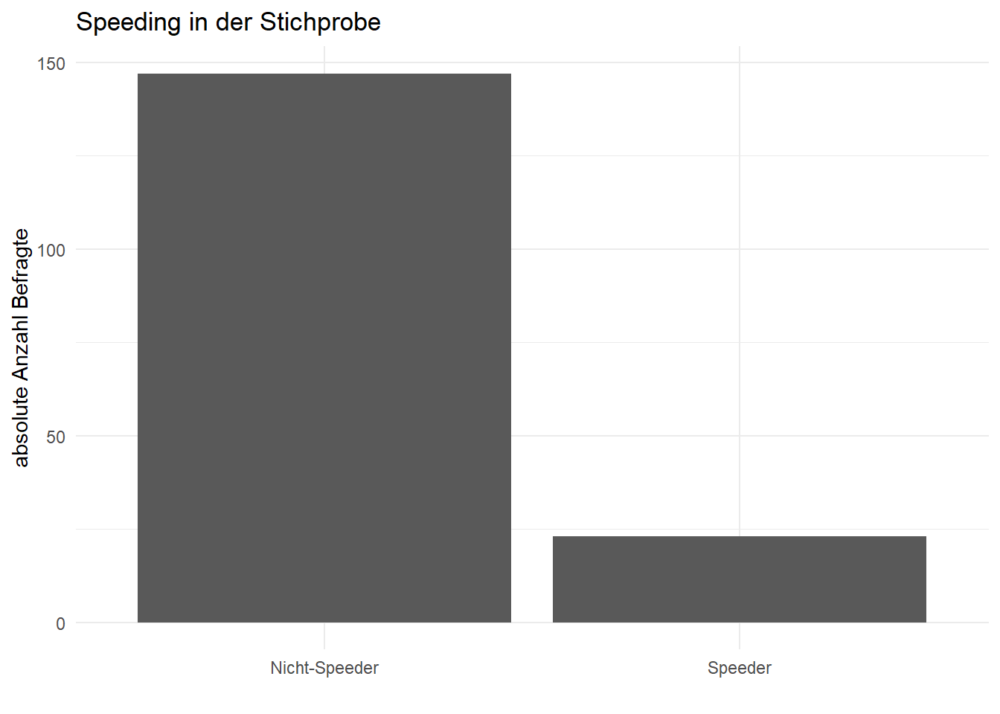

Check | Indikator | Kriterium | Interpretation |
|---|---|---|---|
Speeding | Interviewdauer | Interviewdauer < 1/3 der Median-Dauer | Sehr schnelle Bearbeitung deutet auf Satisficing / oberflächliche Bearbeitung hin. |
Straightlining | Standardabweichung innerhalb von Skalenbatterien | SD über alle Skalenitems = 0 | Konstante Antworten über alle Items deuten auf inhaltsloses Durchklicken hin. |
Deskriptive Auswertung SURF Convenience Umfragedaten
1 Datenreport: SURF Convenience Survey
Vom XXX bis zum 28.02.2026 wird das SURF Convenience-Survey von den SURF Projektpartnern digital über unterschiedliche Kanäle gestreut. Zu diesem Zweck wurde die Online-Umfrage über interne und externe Newsletter, Social Media Plattformen, und Online-Foren gestreut. Ziel dieser ersten Umfrage ist es, eine erste Erhebung der Akzeptanz von und Präferenzen für die digitale SURF-Plattform zu erheben, und einen umfangreichen Test der Umfrage durchzuführen. Die so erhobenen Ergebnisse fliessen in die Weiterentwicklung der Umfrage und andere Projektbestandteile, sowie in die praktische Entwicklungsarbeit der Umfrage ein.
1.1 Aufbau und Inhalte der Umfrage
1.2 Datenqualität
Aufgrund des convenience-Charakters (hier Fußnote einfügen, die “convenience-Charakter” erklärt) der Umfrage muss ein besonderes Augenmerk auf die Qualität der erhobenen Daten gelegt werden. In diesem Abschnitt werden daher folgende Merkmale der Antwortsqualität geprüft, tabelliert, und visualisiert.
In einem zweiten Schritt werden Fälle entfernt, die Auffälligkeiten im Hinblick auf diese Datenqualitätsmerkmale aufweisen. In Summe wurden auf diese Weise somit 23 Fälle von den folgenden Analysen ausgeschlossen.
Dimensionen surf_check: 170 x 1371.2.1 Speeding
Speeding bezeichnet sehr schnelle Umfragebearbeitung und deutet auf Satisficing, bzw. oberflächliche Bearbeitung der Umfrage, oder sogar “Durchklicken” ohne inhaltliche Auseinandersetzung hin und wird im Rahmen dieser Befragung formal definiert als Interviewdauer < 1/3 der Median-Dauer (Median-Dauer = XXX Min., XXX Sek.). Im Folgenden wird die Anzahl der so als ‘Speeder’ definierbaren Fälle aufgeführt und visualisiert.
Speeding | n | Anteil |
|---|---|---|
Nicht-Speeder | 147 | 86.5 |
Speeder | 23 | 13.5 |

1.2.2 Straightlining
Straightlining bezeichnet sehr schnelle Umfragebearbeitung und deutet auf größtenteils konstante Antworten über alle Items, bzw. inhaltsloses Durchklicken hin und wird im Rahmen dieser Befragung formal definiert als Standardabweichung (SD) über alle Skalenitems = 0. Im Folgenden wird die Anzahl der so als ‘Straightliner’ definierbaren Fälle aufgeführt und visualisiert.
Straightlining | n | Anteil |
|---|---|---|
Keine Straightliner | 170 | 100 |
2 Deskriptive Analyse: SURF Convenience Survey
Entfernte Variablen:id, submitdate, lastpage, startlanguage, seed, rand_freq, video_info, immersion, control_info, cheap_talk_script, restrictions_year, config_time, redirect_info_end, survey_feedback, interviewtime, group_time3570, rand_freq_time, group_time3567, video_info_time, group_time3555, dev_box_time, dev_heat_time, dev_battery_time, dev_pv_time, dev_hems_time, group_time3556, acc_pre_time, part_pre_real_time, part_pre_hypo_time, group_time3565, immersion_time, group_time3566, control_info_time, control_heat_time, control_ev_time, control_pv_time, control_batt_time, group_time3557, flex_batt_time, flex_ev_time, flex_pv_time, flex_heat_time, group_time3558, fin_form_time, fin_structure_time, group_time3559, cheap_talk_script_time, group_time3569, restrictions_year_time, fin_amount_year_time, group_time3571, fin_amount_certainty_time, group_time3560, config_depth_time, config_time_time, config_override_time, config_device_time, group_time3561, auto_trust_time, auto_trust_info_demand_time, group_time3562, info_content_time, info_form_time, info_trust_time, group_time3572, motive_time, group_time3554, acc_post_time, part_post_real_time, part_post_hypo_time, group_time3563, alter_time, pers_time, eink_time, strom_rechnung_time, bild_time, geschl_time, wohn_time, wohnort_time, group_time3568, redirect_info_end_time, group_time3564, survey_feedback_time
Dimensionen vorher: 170 x 137
Dimensionen nachher: 170 x 54